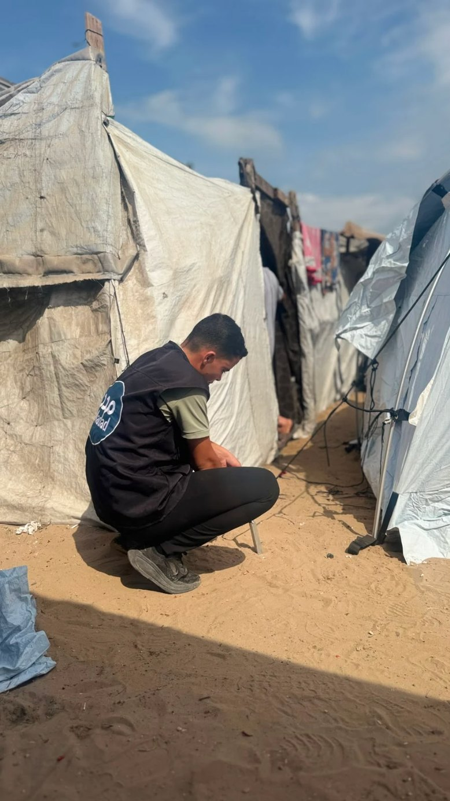
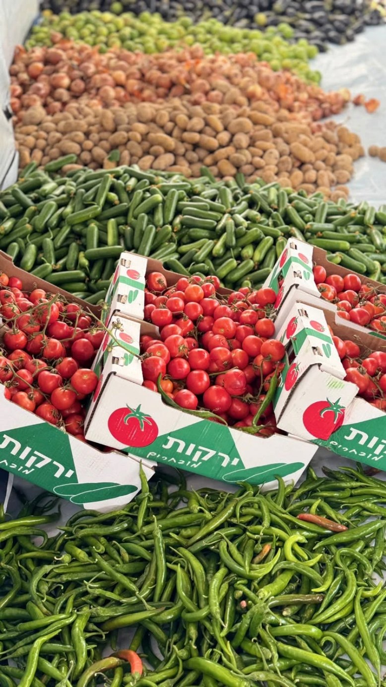
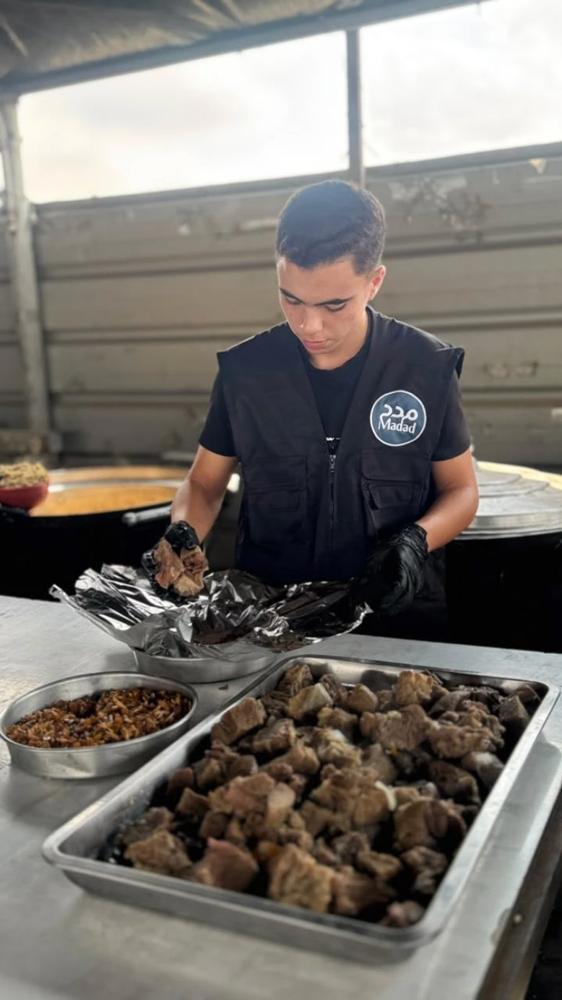

من غزة… نمدّ الخير، ونصنع الأثر.From Gaza… we extend goodness and create impact.
تعمل «مدد» على تنفيذ مشاريع ومبادرات تُلامس احتياجات الإنسان، في مجالات الإغاثة، والصحة، والتعليم، والتوعية المجتمعية، والتنمية، مع السعي لأن يتجاوز أثرها الاحتياج الآني إلى بناء أثرٍ مستدام، وتعزيز قدرة المجتمع على الصمود والنهوض.Madad carries out projects and initiatives that touch real human needs — in relief, health, education, community awareness and development — striving for an impact that goes beyond the immediate need to build something lasting, and to strengthen the community's ability to endure and rise again.
فريق «مدد» ينصب الخيام ويجهّز الأسرّة للأسر النازحة — قطاع غزةThe Madad team pitching tents and preparing beds for displaced families — Gaza Strip
مقدمة عن حملتناAbout our campaign
ثلاثة فصولThree chapters
٠١01
التدخلات الإنسانية العاجلةUrgent Humanitarian Interventions
نقدّم المساعدات الإنسانية العاجلة لأهلنا في غزة، في ظل استمرار الحصار والقصف والنزوح، لنصل بالدعم إلى الأسر الأكثر احتياجًا ونخفف عنهم قسوة الواقع.We deliver urgent humanitarian aid to our people in Gaza amid the ongoing siege, bombardment and displacement — reaching the families most in need and easing the harshness of their reality.
برامج الإغاثة وبناء الأثرRelief Programmes & Lasting Impact
نستجيب للاحتياجات العاجلة للنازحين في غزة، وننفذ مشاريع تخفف عنهم مشقة الحياة، من توفير الطعام والمياه والدواء إلى إنشاء المدارس والمصليات والمرافق المجتمعية.We respond to the urgent needs of displaced people in Gaza and carry out projects that ease the hardship of daily life — from providing food, water and medicine to establishing schools, prayer spaces and community facilities.
التوعية وبناء القدراتAwareness & Capacity Building
نعمل على تعزيز الوعي وتنمية المهارات داخل المجتمع من خلال الدورات التدريبية في الإسعافات الأولية، والإرشاد النفسي، والمهارات الحياتية والمجتمعية، إلى جانب دعم وكفالة مراكز وحلقات تحفيظ القرآن الكريم، بما يسهم في بناء جيل أكثر وعيًا وثباتًا وقدرةً على العطاء.We strengthen awareness and develop skills within the community through training in first aid, psychological counselling, and life and community skills, alongside supporting and sponsoring Qur'an memorisation centres and circles — helping to build a generation that is more aware, more steadfast and more able to give.
صور من الأعمال الميدانية · قطاع غزةPhotos from the field · Gaza Strip
صور حية من ميدان العمل تظهر تفاعل فرقنا مع المجتمع المحلي وتقديم المساعدات بشكل مباشر.Live images from the field showing our teams engaging with the local community and delivering aid directly.
الصور توضح جهودنا في توزيع الإمدادات، تنظيم الأنشطة المجتمعية، ودعم الأسر المحتاجة في غزة.These photos show our efforts in distributing supplies, organising community activities and supporting families in need in Gaza.
طهي الوجبات الساخنةCooking hot meals

تثبيت الخيامSecuring the tents
خبز طازج من فرن الطينFresh bread from the clay ovenتجهيز الأرز للطهيPreparing rice for cooking
معجنات تُحضَّر للتوزيعPastries prepared for distribution

خضار طازجة للتوزيعFresh vegetables for distribution
نصب خيمة جديدةPitching a new tent

تغليف الوجباتPacking the meals
قصص نجاح ودعمStories of success & support
”
[اقتباس من مستفيد أو متطوع — أضف هنا جملة حقيقية من الميدان تروي أثر «مدد».][A quote from a beneficiary or volunteer — add a real line from the field that tells of Madad's impact.]
— [الاسم، المكان]— [Name, place]
[000]
[أسرة مستفيدة][Families supported]
[000]
[وجبة ساخنة][Hot meals served]
[000]
[خيمة ومأوى][Tents & shelters]
[000]
[مشروع منفّذ][Projects delivered]
ساهم معناContribute
كل مساهمة صغيرة تساهم في تغيير حياة الكثيرينEvery small contribution helps change many lives
نرحب بجميع أشكال الدعم والتعاون مع المجتمع المحلي والدولي لتحقيق أهدافنا الإنسانية. جميع التبرعات تُستخدم مباشرة لدعم المشاريع والأسر المحتاجة في غزة.We welcome all forms of support and cooperation with the local and international community to achieve our humanitarian goals. All donations go directly to supporting projects and families in need in Gaza.
١1
التحويل البنكيBank transfer
٢2
الدفع الإلكتروني عبر الموقعOnline payment through the website
٣3
التبرعات العينية أو الماديةIn-kind or financial donations
للتحويل البنكي: [اسم البنك · رقم الحساب / IBAN]For bank transfer: [Bank name · Account number / IBAN]
الأسئلة الشائعةFrequently asked questions
هل يمكنني المساهمة في الحملة وكيف أبدأ؟Can I contribute to the campaign, and how do I start?
نعم، يمكنك المساهمة من خلال التواصل عبر الواتساب. كل مساهمة صغيرة تساهم في تغيير حياة الكثيرين، ونحن نرحب بجميع أشكال الدعم والتعاون مع المجتمع المحلي والدولي لتحقيق أهدافنا الإنسانية.Yes — you can contribute by getting in touch on WhatsApp. Every small contribution helps change many lives, and we welcome all forms of support and cooperation with the local and international community to achieve our humanitarian goals.
ما هي طرق التبرع المتاحة؟What donation methods are available?
نقدم عدة طرق للتبرع تشمل التحويل البنكي، الدفع الإلكتروني عبر الموقع، والتبرعات العينية أو المادية. جميع التبرعات تُستخدم مباشرة لدعم المشاريع والأسر المحتاجة في غزة.We offer several ways to donate, including bank transfer, online payment through the website, and in-kind or financial donations. All donations go directly to supporting projects and families in need in Gaza.
هل توجد برامج خاصة للشباب والطلاب؟Are there programmes for young people and students?
نقدم برامج تدريبية وورش عمل موجهة للشباب والطلاب لتعزيز مهاراتهم، وتنمية قدراتهم القيادية، وتحفيزهم على المشاركة في بناء مستقبل غزة بشكل فعال.We offer training programmes and workshops for young people and students to strengthen their skills, develop their leadership abilities and encourage them to take an active part in building Gaza's future.